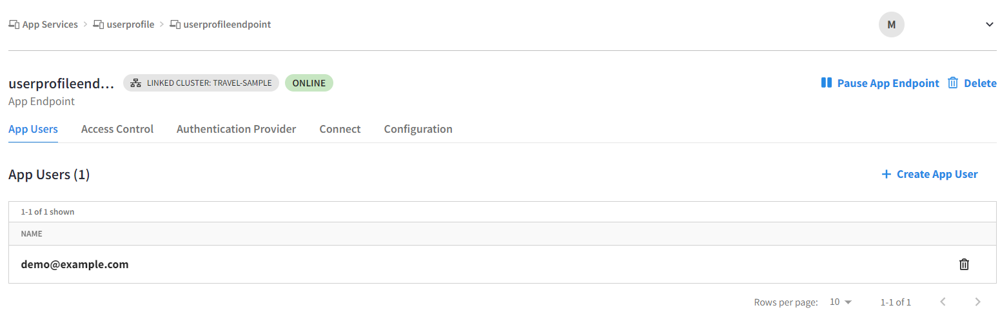

Configuring App Services (Mobile sync)
|
Here is a video tutorial on getting started with offline-first data syncing using App Services |
About Capella App Services
Capella App Services is a fully managed application backend designed for mobile and edge applications.
-
Use Capella App Services to sync data between Capella buckets and edge devices, as well as to authenticate and manage mobile/edge users
-
App Services are accessed via the Capella Control Plane UI, making it easy to configure
-
The feature enables extremely fast and reliable user experiences, even where no internet exists, maximizing business uptime
Capella App Services work with Couchbase Lite.
-
Couchbase Lite is an embedded database that lets you build offline-first applications for your mobile and IoT devices
-
Couchbase Lite embedded apps use App Services Endpoints for authentication and data synchronization
-
Couchbase Lite powered apps can also directly sync data with each other between devices via Peer-to-Peer even when there is no network connectivity to Capella App Services
Prerequisites
You will need a Capella cluster created for connecting to your App Service. This tutorial assumes you are using the trial cluster and “travel-sample” bucket included with the Capella Free Trial. If you have not created a cluster, see Creating Free Account, Cluster, and App Service earlier in this tutorial series. If your cluster does not have the “travel-sample” bucket, You can import it.
This tutorial assumes you have already deployed the App Services trial and the following steps apply to configuring the trial App Service.
Summary of steps
Step 1: Create an App Endpoint for your trial App Service
Step 2: Configure App Endpoint with Access Control Policy
Step 3: Create an App User for App Endpoint via Capella UI
Step 4: Access App Endpoint via Public REST API
Step 5: Connecting Couchbase Lite apps to the Capella App Endpoint
Step 6: (Optional): Access App Endpoint via Admin REST API
Create an App Endpoint for your trial App Service
-
In the Capella UI, click on “App Services” in the left panel menu to navigate to the App Services main screen.
-
On the App Services main screen, click on the trial App Service name.
-
On the App Service configuration screen, click “Create App Endpoint”.
-
Fill in the App Endpoint settings like so:
-
App Endpoint Name: Name your app endpoint. For this exercise enter the name: userprofileendpoint
-
Bucket: Select the “travel-sample” bucket
-
Leave the remaining setting as-is
-
-
Click the “Create App Endpoint” button.
The App Endpoint will take a few moments to deploy. The status will be initially set to “offline”.
Configure App Endpoint with Access Control Policy
-
On the App Endpoints screen, click on the new App Endpoint called “userprofileendpoint”. The endpoint will initially be in “offline” status.
-
Click the “Access Control” tab. This is where you use a JavaScript function to define read/write access and data validation policies. For this exercise, you will use the default configuration.
-
Click “Restore To Default” upper right of screen
-
Click “Save” lower right of screen
-
Click “Resume App Endpoint” upper right corner of the screen.
Create an App User for App Endpoint via Capella UI
-
Click the “App Users” tab, then click “Create App User”.
-
In the “Create App USer” flyout panel, create a new user:
-
Name: demo@example.com
-
Password: password
-
Status: Enabled
-
Channel: Use an asterisk to indicate all documents:
-
Type “*”, then click “+” to add the channel.
-
Leave remaining settings as-is.
-
-
-
Click the “Create App User” button lower right of flyout panel.

Access App Endpoint via Public REST API
Use a REST client to connect to the Public REST endpoint.
To retrieve a document from the travel-sample bucket via the Public REST endpoint:
-
In the Capella UI, navigate to the “userprofileendpoint” App Endpoint, click the “Connect” tab, then copy the URL under “Public Connection”.
-
Use a REST client to access the Public REST endpoint.
-
In the REST client, create a GET request, then paste the Public REST endpoint URL copied earlier.
-
Add “/airline_10” to the end of the URL. So the URL will look like this:
https://adminendpointurl.apps.cloud.couchbase.com:4984/userprofileendpoint/airline_10 -
Select Basic Authentication.
-
Username: demo@example.com
-
Password: password
-
-
Send the GET request. You should see the contents of the document id “airline_10” returned by the request.
Connecting Couchbase Lite Apps to the Capella App Service Endpoint
Couchbase Lite is an embedded database that lets you embed data processing and storage directly to applications running on mobile and IoT devices, allowing them to locally store and access data even without the Internet. Couchbase Lite embedded apps can connect to App Endpoints and sync data with each other and the Couchbase Capella backend over a websockets based data sync protocol.
To connect Couchbase Lite to your App Endpoint, use the public URL corresponding to the App Endpoint in your app replicator setup
To get the App Endpoint public URL, go to the Capella UI and navigate to the “userprofileendpoint” App Endpoint, click the “Connect” tab, then copy the URL under “Public Connection”.
Use a Couchbase Lite sample application to try out connecting to your App Service. Available samples:
-
Swift (iOS, macOS) Find “URLEndpoint” in the sample code, change the URL to point to your App Endpoint Public Connection
-
Kotlin (Android) Find “URLEndpoint” in the sample code, change the URL to point to your App Endpoint Public Connection
-
Java (Android) Find “URLEndpoint” in the sample code, change the URL to point to your App Endpoint Public Connection
-
.Net (Desktop, Xamarin) Find “URLEndpoint” in the sample code, change the URL to point to your App Endpoint Public Connection
-
Java (Desktop) Find “URLEndpoint” in the sample code, change the URL to point to your App Endpoint Public Connection
-
C (Desktop, Mobile, Embedded) Find “CBLEndpoint_CreateWithURL” in the sample code, change the URL to point to your App Endpoint Public Connection
(Optional) App User Administration via Admin REST API
You can programmatically administer users via Admin REST endpoint to return a list of users and add a new user.
Add Allowed IP and create Admin Credential
-
Click the “Connect” tab. The Connect screen displays a Public Connection for applications to connect and sync data over the Internet, and an Admin Connection for Admin access to the database. It also allows you to add Allowed IPs and Admin credentials.
-
Under “Allowed IPs”, click “Add Allowed IP”.
-
On the “Allowed IPs” screen, click “Create Allowed IP”.
-
In the “App Allowed IP” flyout panel, select the “App Permanent IP” option.
-
Click “Add My IP” to add your local IP address to the “IP Address/CIDR Block” setting.
-
Click “Add IP”.
-
On the “Connect” screen under “Admin and Metrics Credentials”, click “Manage Credentials”.
-
On the Admin Credentials screen, click “Create Admin Credential”
-
On the “Create Admin Credential” flyout panel, enter a username and password for your Admin user.
-
Click “Create”.
-
Under “Admin Connection”, copy the endpoint URL
Use a REST client to connect to the Admin REST endpoint
-
Get a list of App Services users:
-
In the REST client, create a GET request, then paste the Admin REST endpoint URL copied earlier.
-
Add “/_user/” to the end of the URL, so the URL looks like:
-
Select Basic Authentication, enter the Admin username and password you created earlier.
-
Send the GET request.
The request will return the user “demo@example.com”.
Add an App Services user named “demo2@example.com”:
-
In the REST client, create a POST request, then paste the Admin REST endpoint URL copied earlier.
-
Add “/_user/” to the end of the URL, so the URL will look like so:
-
Select Basic Authentication, enter the Admin username and password you created earlier.
-
In the request BODY, add the following JSON code snippet:
{ "name": "demo2@example.com", "password": "password", "admin_channels": [ "string" ], "disabled": false } -
Send the POST.
-
Go back to the Capella UI and go to the userprofileendpoint “App Users” tab. The “App Users” screen displays the user “demo2@example.com”.